(2).jpg)
 (1).jpg)
.jpg)
.jpg)
Herbicidas🌿
Herbicidas son productos químicos que se usan para eliminar o controlar malezas en cultivos. Ayudan a mejorar el rendimiento agrícola al reducir la competencia por agua, luz y nutrientes.
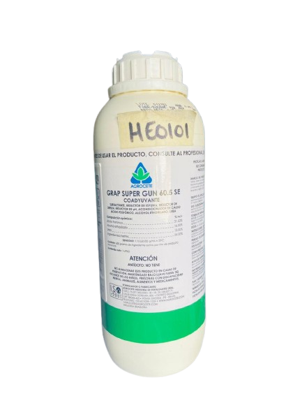
COADERENTE GRAP SUPER GUN
GRAP Super Gun es un coadyuvante agrícola que mejora la acción de herbicidas, insecticidas y fertilizantes. Ayuda a que los productos se adhieran mejor a las plantas, penetren con más eficacia y se mezclen de forma estable.
.png)
FUSILADE
Fusilade es un herbicida selectivo y sistémico que se usa para controlar malezas gramíneas anuales y perennes en cultivos como soya, cebolla, zanahoria, papa y café. Actúa después de la emergencia de las malezas.
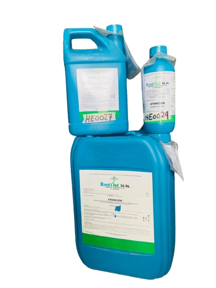
ROOT TOU
Root Tou es un herbicida no selectivo y sistémico a base de glifosato que se utiliza para eliminar todo tipo de malezas incluyendo las de cutícula cerosa en áreas agrícolas antes de la siembra o en cultivos donde se requiere limpieza total.
.png)
MSMA
MSMA es un herbicida selectivo que se utiliza para controlar malezas de hoja ancha y gramíneas en cultivos como algodón y césped actúa por contacto y es absorbido por las hojas provocando la muerte de las plantas no deseadas se aplica en postemergencia y requiere precauciones por su toxicidad.
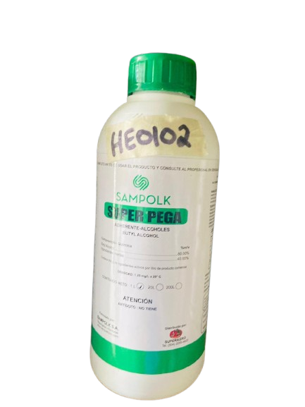
ADERENTE
El adherente Super Pega es un coadyuvante agrícola que se utiliza para mejorar la fijación y cobertura de herbicidas sobre las hojas de las plantas facilita que el producto se mantenga en la superficie vegetal incluso en condiciones de lluvia o humedad aumentando la efectividad del tratamiento.
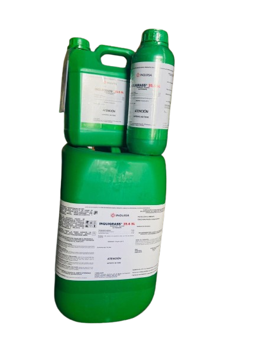
GLIFOSATO INQUIGRASS
El glifosato Inquigrass sirve para eliminar malezas en áreas agrícolas es un herbicida sistémico y no selectivo que actúa bloqueando la producción de aminoácidos esenciales en las plantas provocando su muerte se aplica en postemergencia y es efectivo contra una amplia variedad de especies vegetales no deseadas.
.png)
RAUNDUP
Roundup es un herbicida no selectivo y sistémico a base de glifosato que se utiliza para eliminar malezas en agricultura, jardinería y áreas industriales. Actúa bloqueando la producción de aminoácidos esenciales en las plantas, lo que provoca su muerte. Es eficaz contra una amplia variedad de especies vegetales.
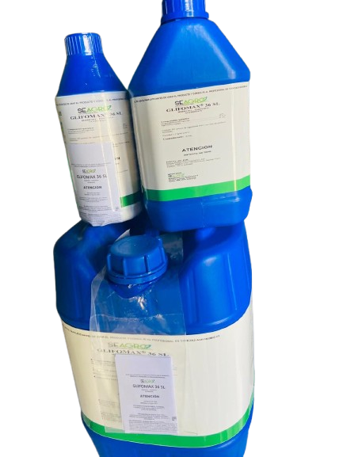
GLIFOMAX
Glifomax es un herbicida no selectivo y sistémico a base de glifosato que se utiliza para eliminar malezas anuales y perennes en áreas agrícolas. Es absorbido por hojas y tallos verdes, y se trasloca hacia las raíces y órganos subterráneos, provocando la muerte total de las plantas emergidas
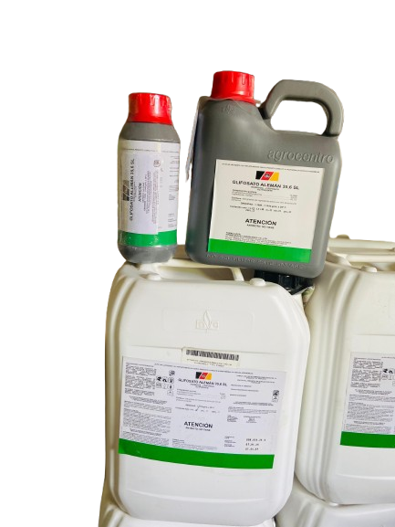
GLIFOSATO ALEMAN
Glifosato Alemán es un herbicida no selectivo y sistémico que se utiliza para eliminar malezas de hoja ancha y gramíneas. Es absorbido por el follaje y se trasloca rápidamente hacia los puntos de crecimiento de la planta, provocando su muerte. No tiene actividad preemergente y no persiste en el suelo.
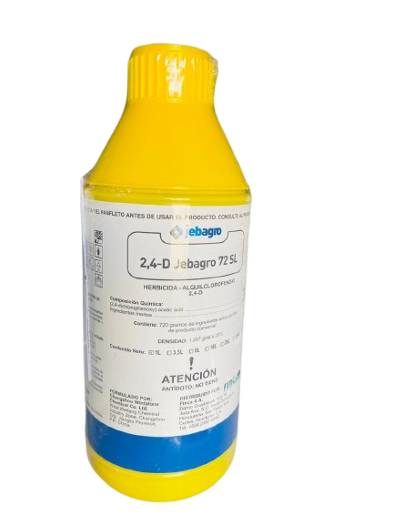
HERBICIDA JEBARGO
2-4-B-72 es un herbicida hormonal postemergente que elimina malezas de hoja ancha y ciperáceas en cultivos como maíz arroz caña de azúcar y pastos actúa de forma sistémica penetrando por hojas y tallos jóvenes se trasloca hacia zonas de crecimiento donde interfiere con la síntesis de proteínas.
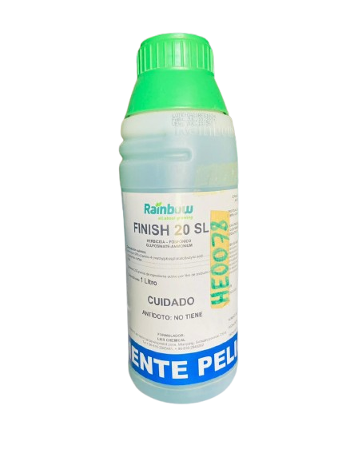
FINISH
Es un regulador de crecimiento usado en el cultivo de algodón. No es un herbicida. Su función principal es acelerar la maduración de las bellotas, promover la caída de hojas (defoliación) y evitar el rebrote, facilitando una cosecha más rápida y uniforme.
.png)
HERBICIDA 2,4-D-72
2,4-D 72 SL es un herbicida hormonal, sistémico y post-emergente que controla malezas de hoja ancha en cultivos como maíz, arroz, caña y pastos. Actúa penetrando por hojas y tallos, se trasloca dentro de la planta y provoca su muerte. Es selectivo para gramíneas y se aplica en dosis de 0.5 a 2.5 L/Ha según el cultivo.
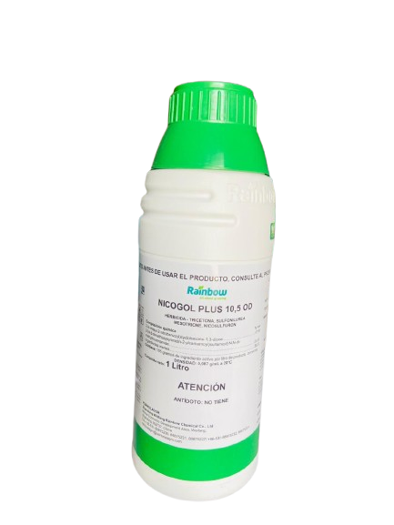
NICOGOL PLUS
Nicogol Plus 10.5 OD es un herbicida sistémico selectivo y de postemergencia diseñado para el cultivo de maíz blanco combina nicosulfuron y mesotriona que actúan bloqueando la síntesis de aminoácidos y carotenoides esenciales en las malezas lo que provoca su muerte.
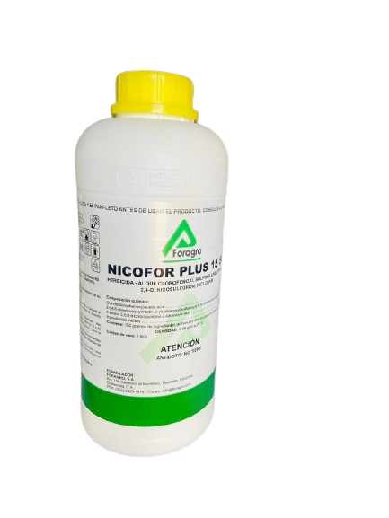
NICOFOR PLUS
Nicofor Plus es un herbicida sistémico selectivo de aplicación postemergente que se utiliza en el cultivo de maíz para eliminar malezas de hoja ancha y zacates se absorbe por el follaje y se trasloca dentro de la planta provocando su muerte permite mantener la milpa limpia y mejorar el rendimiento del cultivo.
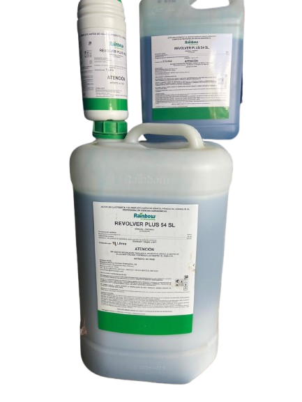
REVOLVER
Revolver es un herbicida selectivo, sistémico y post-emergente utilizado principalmente en el cultivo de maíz. Está formulado para controlar malezas de hoja ancha y gramíneas que afectan el desarrollo del cultivo. Se absorbe por el follaje y se trasloca dentro de la planta, provocando su muerte.
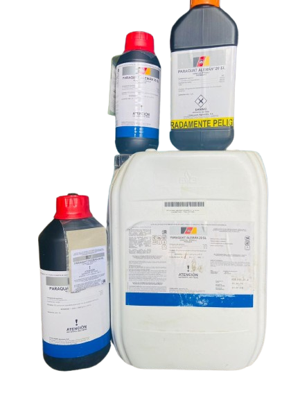
PARAQUAT ALEMAN
Paraquat Alemán es un herbicida de contacto no selectivo utilizado para el control rápido de malezas en diversos cultivos actúa destruyendo el tejido verde de las plantas al entrar en contacto con la luz solar se usa en aplicaciones dirigidas o en cultivos establecidos para limpiar áreas infestadas con malezas.
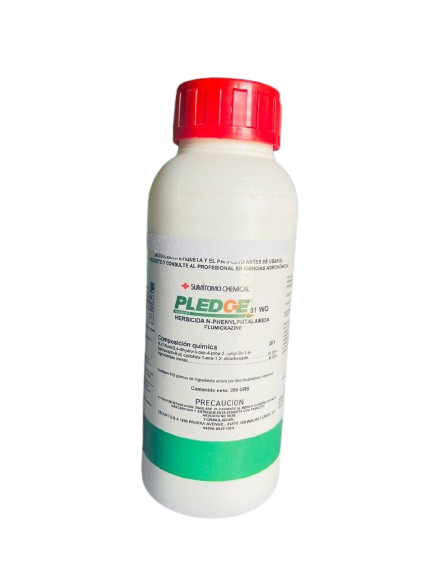
HERBICIDA PLEDGE 250 GRAMOS
Pledge 250 gramos es un herbicida residual selectivo de preemergencia utilizado para controlar malezas de hoja ancha y algunas gramíneas en cultivos como frijol soya y hortalizas actúa inhibiendo la germinación y el desarrollo de malezas desde el suelo se aplica antes de la siembra.
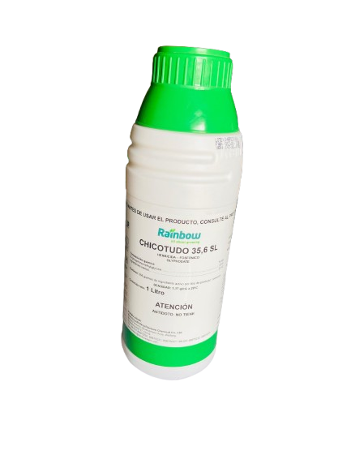
CHICOTUDO
Chicotudo es un herbicida de contacto no selectivo utilizado para el control rápido de malezas en diversos cultivos actúa destruyendo el tejido verde de las plantas al contacto con la luz solar no se trasloca dentro de la planta por lo que no elimina raíces se usa para limpieza de áreas infestadas.
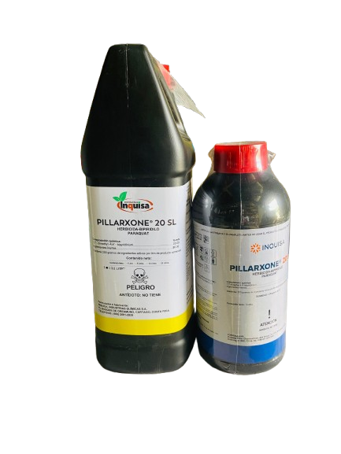
PARAQUAT PILAXONE
Paraquat Pilaxone es un herbicida de contacto no selectivo utilizado para el control rápido de malezas en diversos cultivos actúa destruyendo el tejido verde de las plantas al contacto con la luz solar no se trasloca dentro de la planta por lo que no elimina raíces se aplica en áreas infestadas.
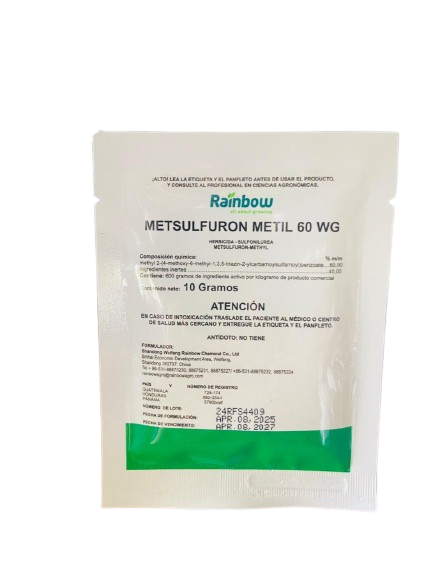
METSULFURON METIL
Metsulfuron metil es un herbicida sistémico selectivo de acción postemergente utilizado para controlar malezas de hoja ancha en cultivos como trigo arroz y pastos actúa inhibiendo la síntesis de aminoácidos esenciales lo que detiene el crecimiento de las malezas se absorbe por las hojas y raíces y se trasloca dentro de la planta.
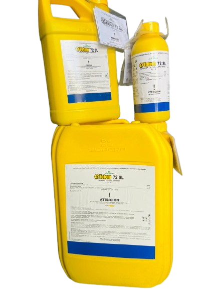
TOTEN
Toten es un herbicida de contacto no selectivo utilizado para el control rápido de malezas en diversos cultivos actúa destruyendo el tejido verde de las plantas al contacto con la luz solar no se trasloca dentro de la planta por lo que no elimina raíces se aplica en áreas infestadas.